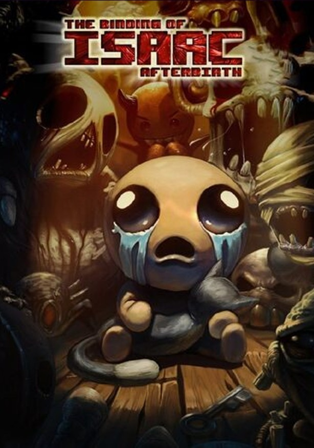

Cuando la madre de Isaac comienza a escuchar la voz de Dios exigiendo que se haga un sacrificio para probar su fe, Isaac escapa al sótano enfrentándose a hordas de enemigos trastornados, hermanos y hermanas perdidos, sus miedos y, finalmente, a su madre.
